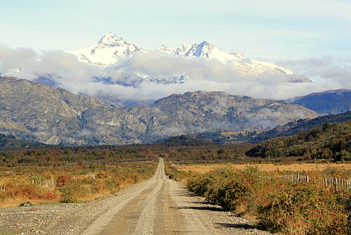

La Carretera Austral en moto, kilómetro a kilómetro
Dónde cargar, cuánto aguanta tu estanque entre bencinas, dónde dormir y qué no te puedes perder, de Chaitén a Villa O'Higgins.
- Recorrido
- Chaitén a Villa O'Higgins
- Distancia por camino
- 984 km
- Pueblos con bencina
- 8
- Tramo más largo sin bencina
- 230 km, Cochrane a Villa O'Higgins
- Mejor época
- diciembre a marzo
Antes del km 0: cómo llegar a Chaitén
La hoja parte en Chaitén, pero casi nadie empieza ahí. Hay tres formas de llegar con la moto.
Por tierra desde Puerto Montt, con tres barcazas
- Puerto Montt a Caleta La Arena44 km por la Carretera Austral.
- Puelche a Hornopirén55 km. Carga lleno en Hornopirén: la siguiente bencina es la de Chaitén.
- Leptepú a Fiordo Largo10 km de ripio dentro del Parque Pumalín, en caravana con los vehículos de la barcaza.
- Caleta Gonzalo a Chaitén57 km. Llegas al km 0 de la hoja.
Las dos barcazas desde Hornopirén las opera Somarco, con pasajes en línea: barcazas.cl.
En barco directo a Chaitén
Naviera Austral lleva vehículos a Chaitén desde Puerto Montt, Quellón y Castro. Se reserva en línea; para motos, confirma con ellos el espacio.
Desde Argentina, por Futaleufú
Entras por el paso de Futaleufú y bajas unos 86 km a Villa Santa Lucía (76 desde el pueblo), el km 76 de la hoja. Así te saltas las barcazas. Ver Santa Lucía en la hoja
Horarios y tarifas cambian según la temporada: revísalos con cada operador antes de salir, sobre todo en enero y febrero.
Fuentes: Sernatur, chile.travel: Chaitén (ruta por tierra y barcazas); Diario Río Negro (duración de las barcazas y caravana en Pumalín); km por camino: OpenStreetMap (OSRM); bencina de Hornopirén: CNE; operadores: Somarco y Naviera Austral.
Léela como un roadbook: km por camino desde Chaitén (OpenStreetMap), línea punteada donde hay ripio y notas en rojo que cambian según cuánto rinde tu moto. El % de ripio es aproximado y cambia cada temporada.
La ruta en fotos
Lo que vas a ver desde la moto, de Chaitén a Villa O'Higgins. Toca una foto para verla en grande.
Directorio de la región
Bencineras, talleres, dónde comer, alojamientos, balsas y lugares para ver, también fuera de la Ruta 7. Datos de OpenStreetMap.
- Cargando el directorio…
La foto de cada negocio es la de su zona, hasta que el dueño suba la suya. Horarios y teléfonos cambian: confirma antes de ir.
Antes de salir
Lo que más se olvida y después se extraña en pleno ripio. Lo que marques queda guardado en este navegador.
Moto
Papeles
Tú
Guía offline: GPX y PDF
La ruta y sus rutas laterales en GPX para OsmAnd, Organic Maps o tu GPS, con cada bencinera, taller y balsa marcados. Y un PDF con los tramos, el precio de la bencina, talleres y alojamientos con teléfono, para cuando no hay señal.
Contacto
¿Cómo está el camino?
Si vas pasando, cuéntanos cómo está el ripio, si alguna bencinera no tenía combustible o si hay obras. Lo sumamos a la hoja de ruta.
Enviar un reporte por WhatsApp¿Tienes un negocio en la ruta?
Talleres, hospedajes y bencineras aparecen gratis en la hoja y el directorio. Por $5.000 al mes quedas como Destacado: tus propias fotos, tu horario, un botón directo a tu WhatsApp, y cada mes te contamos cuántos motoqueros vieron tu ficha.
Agregar o corregir mi negocioPróximamente: tours guiados
Estamos armando salidas guiadas por la Carretera Austral. Si te interesa, escríbenos y te avisamos cuando estén listas.
Avísenme por WhatsApp¿Quieres sumarte o sumar tu negocio? Escríbenos directo: WhatsApp +56 9 5391 0713 o correo fer.becker21@gmail.com.